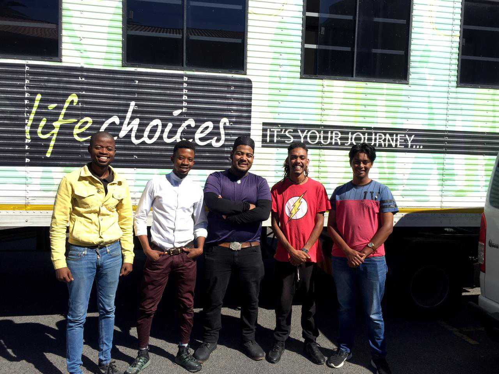

About
Cultural Cuisine was founded in 2022. Our aim is to create a restaurant
were we accept and respect each culture by reinventing the way humanity
views foood and culture, to foster an innovative dining experience.
"Everything starts with it's ingredients" and our ingredients are having
the cultural streets of Bo-kaap, Cape Town coupled with rich Table
Mountain views which drives Cultural Cuisines aim.
To ensure that you recieve the best possible experience:
- We respect each and every person and their culture
- Our dishes are prepared and servered with the utmost taste and knowledge from our international experienced chefs
- Our ingredients are sourced locally and internationally
- Our menu is packed with a variaty of cultural dishes
Cultural Cuisine Team
